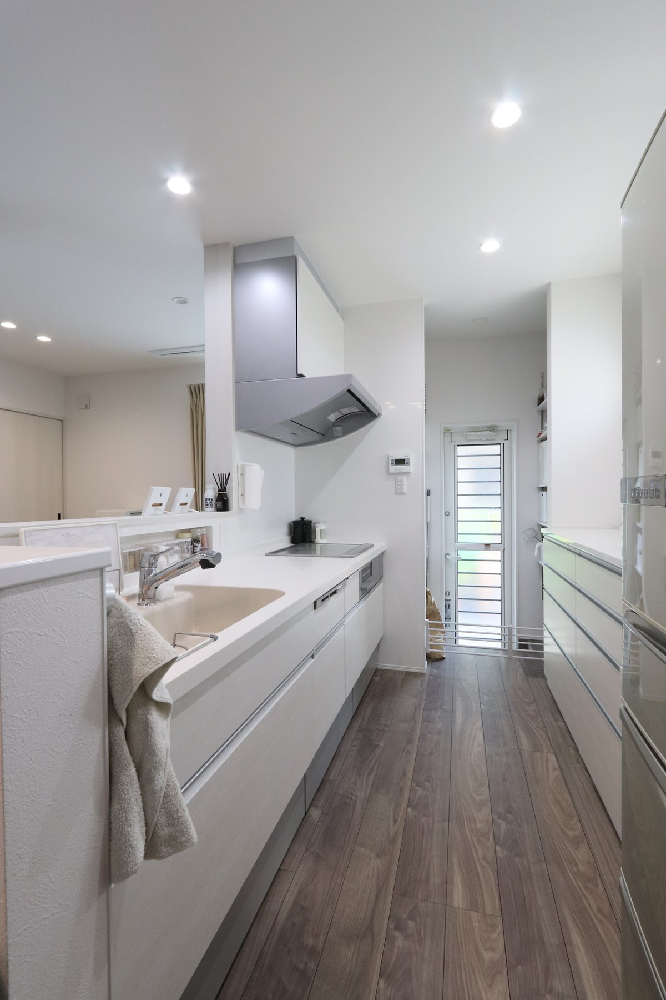
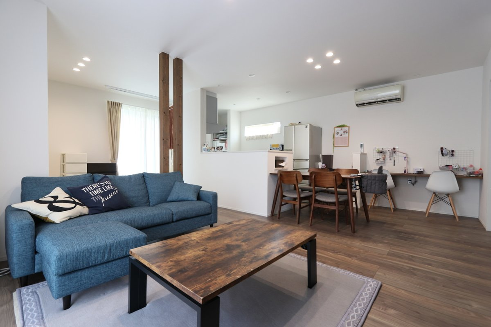

| ご家族 | ご夫婦とお子様たち |
|---|---|
| 取材 | 旧サイト掲載の取材原稿より |
元々、分譲マンションを購入していました。
駅からも近く便利だったのですが、子供が生まれ、遊ぶ空間があまりなかったり、駐車場代などお金の面でも考える事が多かったんです。
そんな日々を過ごしている中で、「一軒家もいいな」と夫婦で話合いました。
上の子供の学校区域の関係もあり、年内にはマンションの売却も新築も建てたいと考えており、凄くバタバタとした家づくりでした。
まずはマンションを査定に出す所からスタートしましたね。
待ちながら、新しい土地を探したり・・・。
条件としては、値段・坪数・更地 この3つが自分達の考えに近い所。
そして静かな場所。
これをベースに探しました。
分譲マンションの売却も土地探しも、トントン拍子で進んでいきました。
条件も良く満足しています。
シバサンホームとの出合いホームページを観て、資料請求を行っていました。
シバサンホームともう１つ他社へ見に行ったくらいで、比較した会社はそんなにありませんでした。
シバサンホームは手作り感がいいと思ったのと、担当アドバイザーさんとの相性が良かったので決めました。
後は事務所が近くて行きやすかったのもあったり、子供の面倒を初めから見てくれていたので、とても助かりました。
間取りもほぼお任せで、自分達のこだわりたい箇所だけ伝えて、スムーズに打ち合わせもできましたね。
私が主で、主人は好きにさせてくれていました。
見学会には、一度だけ行きました。
平屋いいなぁとも思っていましたが、自分達の土地の事を考え２階建てにしましたが、見学会で見た、土間のアイディアは使用しました。
こだわったポイントまずは、金額ですよね。
当時住んでいたマンションよりは上回りたくなかったです。
インスタで検索したり、お家のイメージを沢山していました。
自分の間取りに近いお家なんかも検索していました。
テイストは私も主人もシンプルが良かったです、意見が食い違う事はなかったですね。
私はランドリースペースを分けたかったんです。
お値段と相談して、結局一つの空間になったのですが、その分広めなスペースにしました。
家具や収納もスッキリ見える様にこだわっています。
キッチンは腰壁がよく、手元が見えない様に。
ダイニング横のパントリーもこだわっています。
２階のクローゼットも皆で使える様にしています。
主人のこだわりはリビング階段！帰ってきて家族の顔が見れる様に。ここは譲れないポイントでしたね。

脱衣所を本当は別にしたかったのですが…
後はそうですね、ベランダは結局使わないことが多いです。
マンションに住んでた際の暮らし方が染みついていて、結局ホスクリーンで部屋干ししていますね。
その分部屋広くできたかなぁとかも思います。
コンセントの位置は本当に思いました。
皆が集まる場所やダイニングで居る事が多いので、携帯の充電器とかさしたい…と思う事はありますね。
トイレの照明センサーも付けたら良かったとか…色々思う事はあります。
けれど、マンションの売却・土地＆新築をあの短期間で出来たので良かったです。
何より、子供達が走っても怒らなくていいのはありがたいですね。
夏はお庭でプールも出来ますし、マンション時代は駐車場や近隣の方の配慮もあり、中々お家に人を呼べなかったんですけど、一軒家にしてからは、友達とかも呼べて楽しく過ごせるのは本当に嬉しいし、“建ててよかったなぁ”と思います。
そうですね…次もう一度家を建てれるなら、大きい土地に平屋。建てたいですね〜（笑）